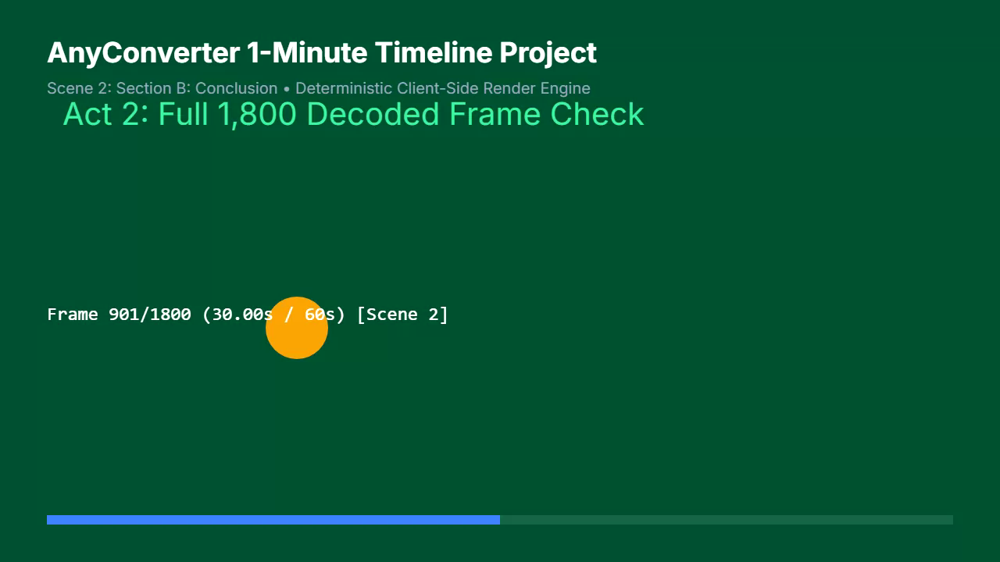
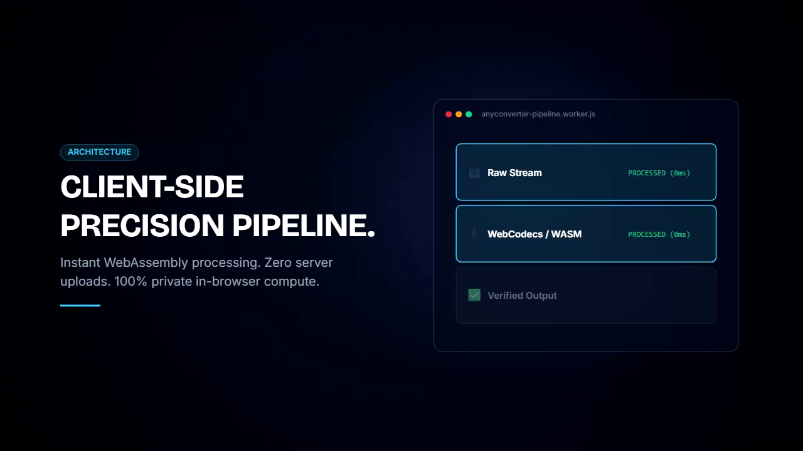
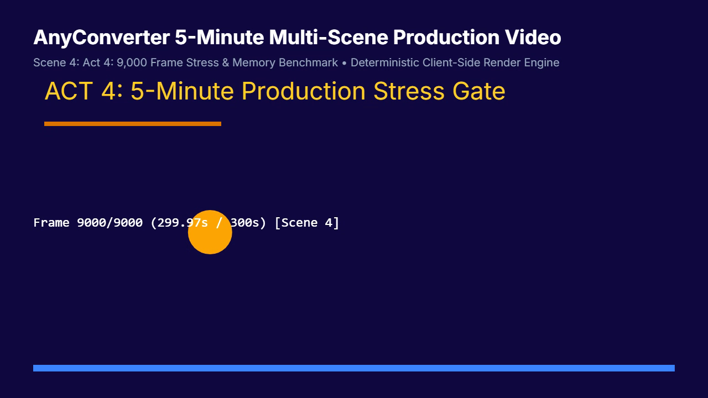
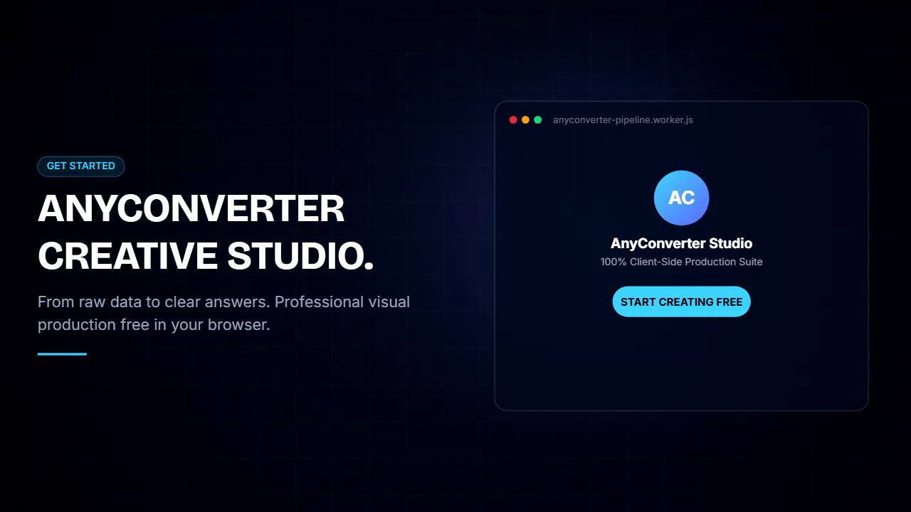

Direct pixel comparison between baseline engineering demo exports and Phase 01 production compositions.

Repeated orange test circle, bottom progress strip, debug subtitle, and huge empty slate background. No story or commercial value.

Purposeful 5-shot narrative, Bricolage Grotesque typography, data transformation mockup, sub-42ms latency metrics, pure commercial polish.

Technical 300-second benchmark repeats the exact same non-diegetic orb oscillation with zero editorial pacing or visual progression.

Deliberate payoff shot establishing AnyConverter Creative Studio as a client-side powerhouse with clear call-to-action.